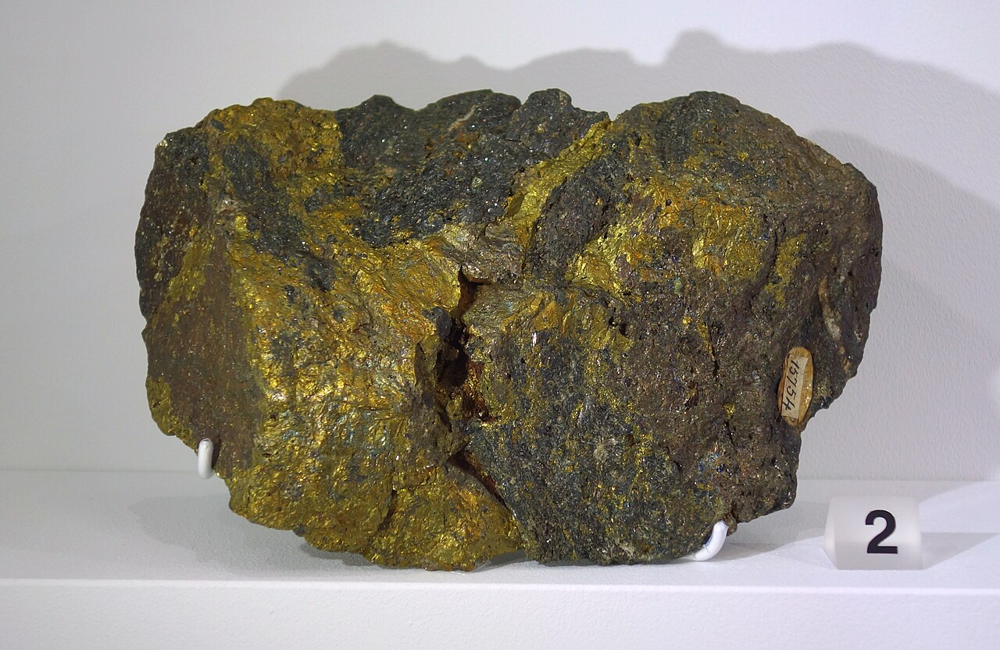

D'où vient la matière ?
Relance du professeur si la zone « Qu'a-t-il coûté à fabriquer ? » (vagues) reste vide
R.Blanchard, professeur de Technologie
Qu'a-t-il fallu pour la transformer ?
Relance du professeur si la zone « Qu'a-t-il coûté à fabriquer ? » (vagues) reste vide
R.Blanchard, professeur de Technologie
Et pour en fabriquer 10 000 ?
Relance du professeur si la zone « Comment le fabriquer ? » (damier) reste vide
R.Blanchard, professeur de Technologie
Et pour en fabriquer une seule, ici, au collège ?
Relance du professeur si la zone « Comment le fabriquer ? » (damier) reste vide
R.Blanchard, professeur de Technologie
D'où vient la matière ?
1

Roche du
sous-sol
2
Pétrole ou plante
3
Matière prête à mettre en forme
Photo n° 1 : Daderot, Natural History Museum (Londres), Wikimedia Commons, domaine public (CC0).
R.Blanchard, professeur de Technologie